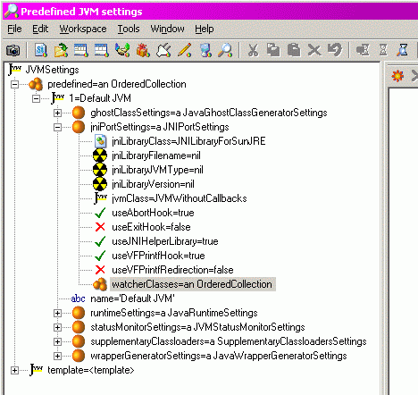
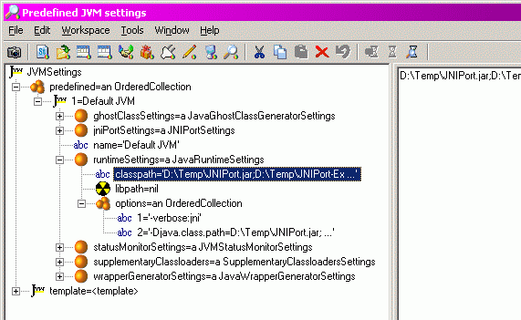
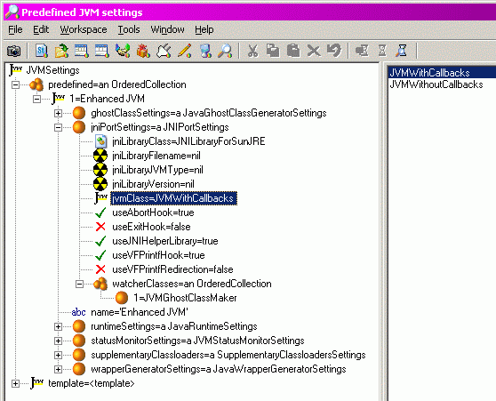

|
JNIPort for Dolphin Smalltalk |
|
|
Back to Goodies |
A Walkthrough with JNIPortThis section is a walkthrough of installing JNIPort and setting up couple of simple configurations. For more information on configuration settings see the Configuration section. Install the Java RuntimeI assume that if you didn't know how to install and use the Java runtime then you wouldn't be interested in JNIPort. So this sub-section is very short. <grin> Install JNIPortUnpack the JNIPort packages, resources, etc. Put them wherever you want (there's no need to put them in a folder that's relative to your Dolphin image, though you can if you want to). We'll use the JNI Helper library so you should get the DolphinJNIHelper.dll file from the Extras\ folder and put it somewhere where Dolphin will be able to find it. You could put it in Dolphin installation folder, or somewhere on your %Path%, for instance. I recommend rebuilding the DLL from source (if you can, but you'll need MS VC++) or at least making sure that it's been properly virus-scanned. Load the JNIPort packages into Dolphin. There are lots of packages; the easiest way to install them is to install the 'CU JNIPort' package which is a empty package with all of JNIPort as its prerequisite packages. You can uninstall the loader package as soon as you've used it. You should now have scads of new packages and code to sniff around in. You may also want to install the Java support files. This isn't necessary unless you want to use Java callbacks, or to run the regression tests. The Extras\ folder contains two .JAR files, JNIPort.jar and JNIPort-Tests.jar; put these somewhere where the runtime will be able to find them. How you do this depends on how you like to use Java — I prefer to unpack all JAR files into a single directory tree that is on my %CLASSPATH%, other people seem happy to configure long lists of JAR files. If you don't have a predefined strategy then just leave them where they are and we'll get back to them later. You may want to unpack the .ZIP files and have a look at the source (it's pretty dull). Configure JNIPortYou should now have a 'JVM Status' icon in your 'Additional tools' folder and in the additional tools menu. Click on it. That should start the JVM Status Monitor, which will be a bit blank since there are no JVMs running. Before you can start one we have to configure it. The configuration is saved in a list of settings objects; you can have as many of these as you want. Each Java runtime is initialised from one of the settings objects. In the JVM Status tool, select 'JVM⇒Predefined settings⇒Edit...' which will start a Published Aspect Inspector on the predefined settings (I intend to include a dedicated editor in a later version of JNIPort). There should be subsettings called 'template' (which you can ignore for now) and 'predefined'. The 'predefined' subsetting is an OrderedCollection of settings objects. Select it, and click on the 'New item' icon; that will create a new settings object (actually a copy of the template), open it up and edit its 'name' to something like 'Default JVM'. It should have six further subsettings. Select 'jniPortSettings' which is where JNIPort itself is configured. The 'jniLibraryClass' should already be set to 'JNILibraryForSunJRE' which is fine if you are using either Sun's JRE or the Sun J2SDK. The next three settings should all be left nil. The 'jvmClass' setting should be 'JVMWithoutCallbacks' (this example won't use callbacks). You should probably turn on 'useAbortHook', 'useJNIHelperLinbrary', and 'useVFPrintfHook' which tell JNIPort to monitor the Java runtime. The settings should now look something like this:  Now go back up a level and edit the 'runtimeSettings'; these are settings that are passed to the Java runtime, in much the same way as parameters to the 'java' program are passed to the runtime. The 'classpath' is the equivalent of the %CLASSPATH% environment variable. If you already have a %CLASSPATH% set, then its value should have been imported automatically. You may also need to tell the runtime where to find the .JAR files that come with JNIPort, if so then add their locations to the ;-separated list. You may also want to add some runtime options, for this example add '-verbose:jni' to the 'options' sub-setting, which is an OrderedCollection of Strings. The options can be anything that could be passed as options to the 'java' program (except options like '-server' that control which Java DLL to use — the JNIPort equivalent is to set 'jniLibraryJVMType' in 'jniPortSettings'). The settings should now look roughly like this:  Close the editor, and you are now ready to start the Java runtime. Starting the Java RuntimeThe Status Monitor's 'JVM⇒Start JVM' menu should now have a '⇒Default JVM' subitem (it has an entry for each pre-defined JVM settings object). Select that and, if everything's set up correctly, a Java runtime configured from your settings will start. Take a look at the various pages of the status monitor. The status is updated at intervals, but by default no interval is set, so select 'View⇒Update interval⇒1 second'. Also use 'View⇒Visible pages⇒JVM Debug' to add the page that shows the JVM's debugging output. For more information see JVM Status Monitor. Now to try out something simple. Open a new workspace and type:
which should call the Java method
The way we have configured the system doesn't support ghost classes, so many of the more convenient features of JNIPort are still missing. However you may like to look at the examples of using the basic level of JNIPort. The next section shows how to configure ghost classes. You might want to install the 'CU Java Base Tests' package; it uses the SUnit framework (though the test are not, and are not intended to be, unit tests). If you are using a recent Sun JVM then all the tests should pass (though three of them will be skipped and write a message to the Transcripts because they require the ability to generate Java classfiles on the fly, which is not part of JNIPort). If you are not using a recent Sun JVM, then see these notes. Configuring Ghost Classes and CallbacksGo back to the Status Monitor and use the 'JVM⇒Predefined settings⇒Edit...' menu again. The first thing to note is that you cannot change the settings of a running JVM; in fact when JNIPort starts a new runtime, it makes a copy of the settings to prevent accidents. That means that you could just change the existing 'Default JVM' settings object if you wanted to; however it's probably better to create a new settings object and give it a different name, say 'Enhanced JVM'. Set it up as before (you could use Dolphin's Copy and Paste operations), then make two changes: set 'jniPortSettings/jvmClass' to JVMWithCallbacks, and add a single item, JVMGhostClassMaker, to the 'jniPortSettings/watcherClasses' list (you also have the option of adding a JVMLazyGhostClassMaker, of which more below). The settings should now look roughly like this:  At this point you ought to be able to start a new runtime using the new settings, however (courtesy of Sun's failure to implement their own APIs) it's not currently possible to run more than one JVM from the same process at the same time. It's also not even possible to run more than one successively (an even greater failure on Sun's part), so the only way to run a new JVM is to restart Dolphin. So save the image and quit Dolphin. When you restart (if you didn't close down the JVM or the status monitor — and there's no reason why you should have done) you will see that the running JVM is now dead. If you kept any references to Java objects from the previous session then they will be dead too, and will throw errors if you try to use them. You can now start the new 'Enhanced JVM' in the same way as before. There will be a pause of anything from a few seconds to a minute when you do so (depending on the speed of your machine). You may see a similar pauses when you first reference other Java classes (it depends on how many new classes JNIPort has to import and create ghosts for). I agree that the pause is excessive and that is what JVMLazyGhostClassMaker is about; if you add that class to the watcher list instead of a JVMGhostClassMaker then you'll get an alternative implementation of the ghost class stuff which uses lazy initialization to create actual ghosts only when they are really used. That facility is still experimental, though. You may as well set the update interval again (the update interval is associated with the JVM rather than being a property of the Status Monitor). Then go try out the ZIP file example or the Swing example. Alternatively you could load the 'CU Java Wrapper Generation Tests' and 'CU Java Callback Tests' and see if they work. |
Copyright © Chris Uppal, 2003-2005
Java, JNI (probably), JVM (possibly), and God knows what else, are trademarks of Sun Microsystems, Inc.